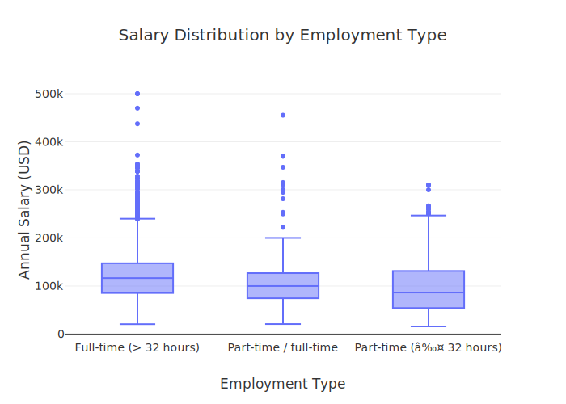
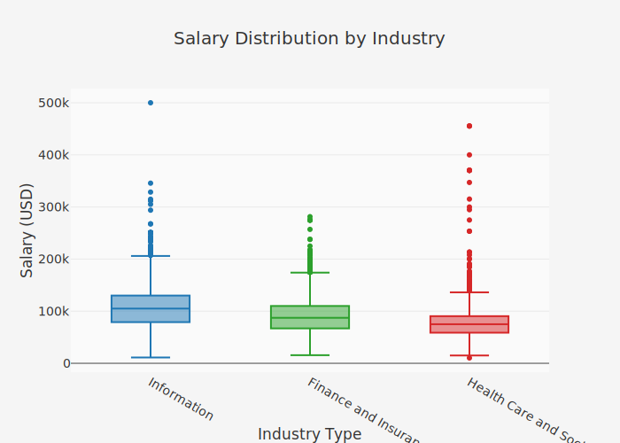
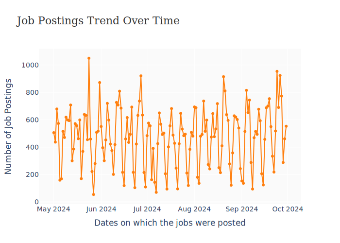
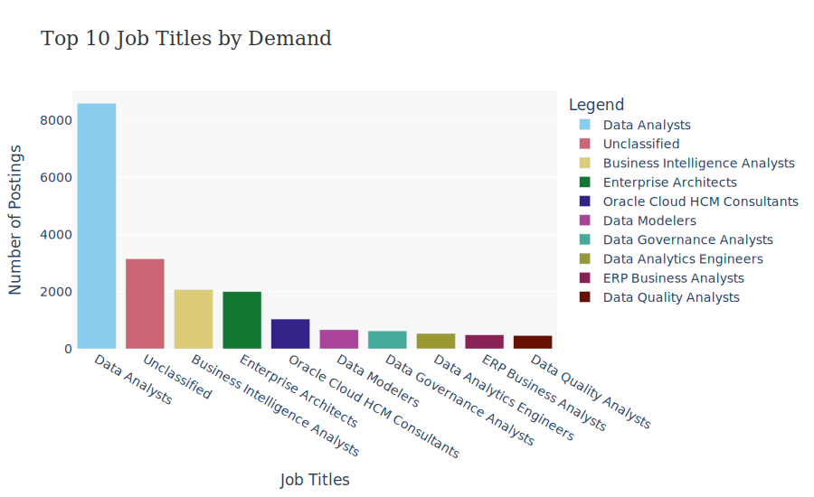
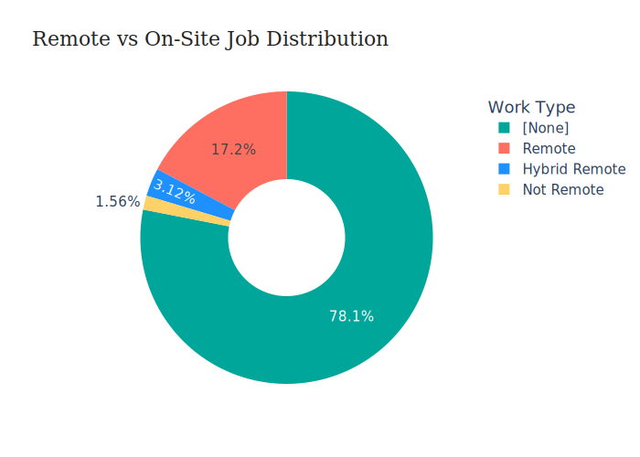
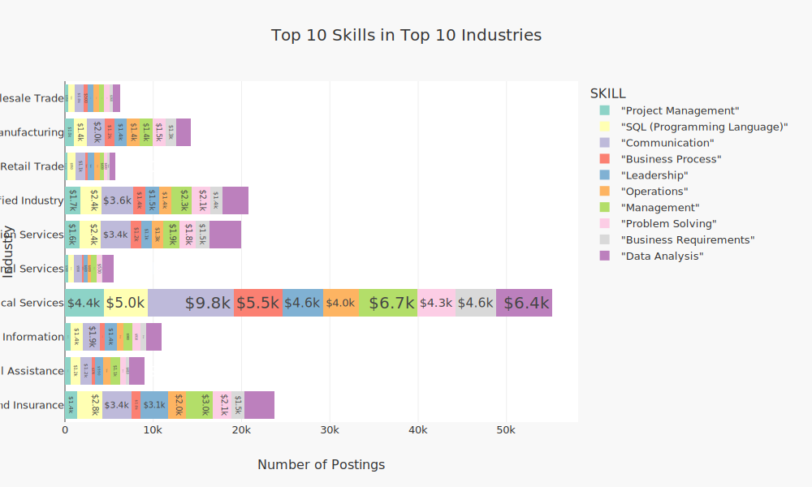
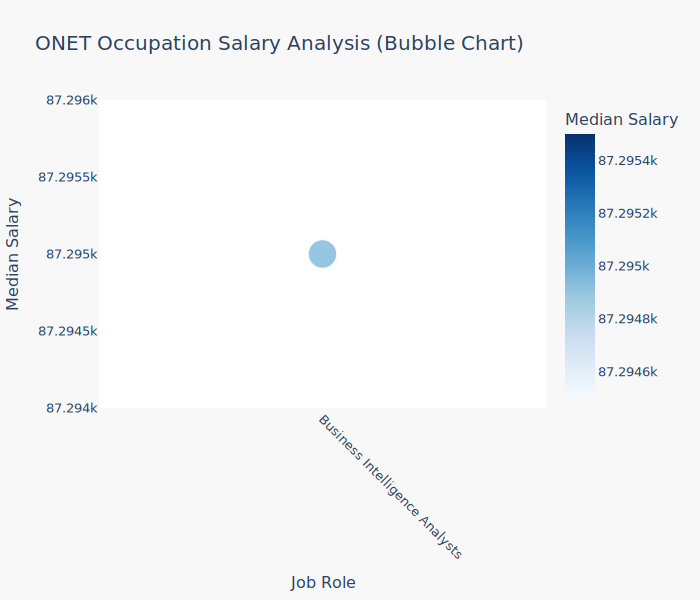
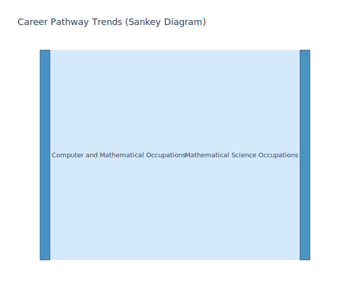

#import gdown
#url = "https://drive.google.com/uc?id=1V2GCHGt2dkFGqVBeoUFckU4IhUgk4ocQ"
#gdown.download(url, "lightcast_data.csv", quiet=False)Module 04: Lab 01
Visual Reporting and Storytelling
visualization
plotly
spark
Visual Reporting
Storytelling with Data
Industry-Specific Visualization
Objectives
By the end of this lab, you will: 1. Load and analyze the Lightcast dataset in Spark DataFrame. 2. Create five easy and three medium-complexity visualizations using Plotly. 3. Explore salary distributions, employment trends, and job postings. 4. Analyze skills in relation to NAICS/SOC/ONET codes and salaries. 5. Customize colors, fonts, and styles in all visualizations (default themes result in a 2.5-point deduction). 6. Follow best practices for reporting on data communication.
Step 1: Load the Dataset
import pandas as pd
import plotly.express as px
import plotly.io as pio
pio.renderers.default = "vscode"
from pyspark.sql import SparkSession
from pyspark.sql.functions import col
spark = SparkSession.builder.appName("lightcast_data.csv").getOrCreate()
df = spark.read.option("header", "true").option("inferSchema", "true").option("multiLine","true").option("escape", "\"").csv("lightcast_data.csv")
#df.printSchema()
#df.show(5)Setting default log level to "WARN".
To adjust logging level use sc.setLogLevel(newLevel). For SparkR, use setLogLevel(newLevel).
25/03/28 06:15:24 WARN NativeCodeLoader: Unable to load native-hadoop library for your platform... using builtin-java classes where applicable
import plotly.graph_objects as go
import plotly.io as pio
# Define your custom 'nike' template
pio.templates["nike"] = go.layout.Template(
layout={
"title": {
"font": {
"family": "HelveticaNeue-CondensedBold, Helvetica, Sans-serif",
"size": 30,
"color": "#333"
}
},
"font": {
"family": "Helvetica Neue, Helvetica, Sans-serif",
"size": 16,
"color": "#333"
},
"colorway": ["#ec7424", "#a4abab"], # Nike-style colors
"hovermode": "x unified"
},
data={
"bar": [
go.Bar(
texttemplate="%{value:$,.2s}",
textposition="outside",
textfont={
"family": "Helvetica Neue, Helvetica, Sans-serif",
"size": 20,
"color": "#FFFFFF"
}
)
]
}
)
pio.templates.default = "nike"
1 Salary Distribution by Employment Type
- Identify salary trends across different employment types.
- Filter the dataset
- Remove records where salary is missing or zero.
- Aggregate Data
- Group by employment type and compute salary distribution.
- Visualize results
- Create a box plot where:
- X-axis =
EMPLOYMENT_TYPE_NAME - Y-axis =
SALARY_FROM
- X-axis =
- Customize colors, fonts, and styles to avoid a 2.5-point deduction.
- Create a box plot where:
- Explanation: Write two sentences about what the graph reveals.
# Your Code for 1st question here
pio.templates.default = "nike"
pdf = df.select("EMPLOYMENT_TYPE_NAME", "SALARY").toPandas()
fig = px.box(pdf, x="EMPLOYMENT_TYPE_NAME", y="SALARY", title="Salary Distribution by Employment Type", color_discrete_sequence=["#636EFA"])
fig.update_layout(
xaxis_title="Employment Type",
yaxis_title="Annual Salary (USD)",
font_family="Calibri",
font_size=14,
title_font_size=20
)
fig.show()
fig.write_image("Figures/qus1.svg") Unable to display output for mime type(s): application/vnd.plotly.v1+json
1.0.0.0.1 This chart shows how salaries vary based on job type. People working full-time (> 32 hours a week) usually earn more and have a bigger range of salaries, including some very high ones.
1.0.0.1 Part-time workers, whether only part-time or mixed with full-time, tend to earn less and have more similar pay across the board.
2 Salary Distribution by Industry
- Compare salary variations across industries.
- Filter the dataset
- Keep records where salary is greater than zero.
- Aggregate Data
- Group by NAICS industry codes.
- Visualize results
- Create a box plot where:
- X-axis =
NAICS2_NAME - Y-axis =
SALARY_FROM
- X-axis =
- Customize colors, fonts, and styles.
- Create a box plot where:
- Explanation: Write two sentences about what the graph reveals.
# Your code for 2nd question here
from pyspark.sql.functions import avg, min, max, count
filtered_df = df.filter((col("SALARY_FROM").isNotNull()) & (col("SALARY_FROM") != 0))
industry_df = filtered_df.groupBy("NAICS2_NAME").agg(
count("*").alias("job_count"))
industry_df.show() +--------------------+---------+
| NAICS2_NAME|job_count|
+--------------------+---------+
|Administrative an...| 4040|
|Public Administra...| 737|
|Real Estate and R...| 454|
| Information| 2356|
|Unclassified Indu...| 3811|
|Accommodation and...| 270|
|Finance and Insur...| 4013|
| Construction| 299|
| Utilities| 343|
|Management of Com...| 41|
|Professional, Sci...| 9282|
|Arts, Entertainme...| 90|
|Other Services (e...| 385|
|Transportation an...| 245|
| Wholesale Trade| 943|
|Agriculture, Fore...| 29|
| Manufacturing| 1740|
|Mining, Quarrying...| 38|
|Educational Services| 1033|
|Health Care and S...| 1442|
+--------------------+---------+
only showing top 20 rows
import glob
filtered_df = df.filter(
(col("SALARY_FROM").isNotNull()) &
(col("SALARY_FROM") > 0) &
(col("NAICS2_NAME").isin("Health Care and Social Assistance",
"Finance and Insurance",
"Information"))
)
salary_df = filtered_df.select("NAICS2_NAME", "SALARY_FROM")
salary_df.write.mode("overwrite").option("header", True).csv("industry_salaries")
files = glob.glob("industry_salaries/part-*.csv")
pdf = pd.concat((pd.read_csv(f) for f in files), ignore_index=True)
pio.templates.default = "nike"
fig = px.box(
pdf,
x="NAICS2_NAME",
y="SALARY_FROM",
title="Salary Distribution by Industry",
color="NAICS2_NAME",
color_discrete_sequence=["#1f77b4", "#2ca02c", "#d62728"]
)
fig.update_layout(
font_family="Calibri",
font_size=14,
title_font_size=20,
xaxis_title="Industry Type",
yaxis_title="Salary (USD)",
plot_bgcolor="#fafafa",
paper_bgcolor="#f5f5f5",
showlegend=False
)
fig.show()
fig.write_image("Figures/qus2.svg")
Unable to display output for mime type(s): application/vnd.plotly.v1+json
This chart compares salary ranges across three major industries. The Information industry tends to offer the highest salaries, with a wider spread and more high-paying roles. Finance and Insurance shows slightly lower median salaries, but still competitive. Meanwhile, Health Care and Social Assistance generally offers the lowest pay among the three, though it still has some high-salary outliers.
3 Job Posting Trends Over Time
- Analyze how job postings fluctuate over time.
- Aggregate Data
- Count job postings per posted date (
POSTED).
- Count job postings per posted date (
- Visualize results
- Create a line chart where:
- X-axis =
POSTED - Y-axis =
Number of Job Postings
- X-axis =
- Apply custom colors and font styles.
- Create a line chart where:
- Explanation: Write two sentences about what the graph reveals.
#Filtering and grouping job postings by date
import glob
job_post_df = (
df.filter(col("POSTED").isNotNull())
.groupBy("POSTED")
.agg(count("*").alias("job_count"))
)
# grouping the data to CSV and read with pandas
job_post_df.write.mode("overwrite").option("header", True).csv("job_posts")
files = glob.glob("job_posts/part-*.csv")
pdf = pd.concat((pd.read_csv(f) for f in files), ignore_index=True)
#Format and sorting by date
pdf["POSTED"] = pd.to_datetime(pdf["POSTED"])
pdf = pdf.sort_values("POSTED")
pio.templates.default = "nike"
fig = px.line(
pdf,
x="POSTED",
y="job_count",
title="Job Postings Trend Over Time",
markers=True, # adds visible dots at data points
color_discrete_sequence=["#FF7F0E"]
)
fig.update_layout(
font=dict(family="Segoe UI", size=14),
title_font=dict(family="Georgia", size=22, color="#333333"),
xaxis_title="Dates on which the jobs were posted",
yaxis_title="Number of Job Postings",
plot_bgcolor="#FAFAFA",
paper_bgcolor="#FFFFFF"
)
fig.show()
fig.write_image("Figures/qus3.svg")
Unable to display output for mime type(s): application/vnd.plotly.v1+json
This line graph shows how the number of job postings changed from May to October 2024. While the overall trend stays fairly consistent, there are regular ups and downs—suggesting that job postings spike on certain days or weeks, then dip right after. It could reflect typical hiring cycles or patterns like jobs being posted more often early in the week.
4 Top 10 Job Titles by Count
- Identify the most frequently posted job titles.
- Aggregate Data
- Count the occurrences of each job title (
TITLE_NAME). - Select the top 10 most frequent titles.
- Count the occurrences of each job title (
- Visualize results
- Create a bar chart where:
- X-axis =
TITLE_NAME - Y-axis =
Job Count
- X-axis =
- Apply custom colors and font styles.
- Create a bar chart where:
- Explanation: Write two sentences about what the graph reveals.
# Your code for 4th question here
#finding the top 10 jobs
job_title = df.filter(col("TITLE_NAME").isNotNull()) \
.groupBy("TITLE_NAME") \
.agg(count("*").alias("job_count"))
top_10_jobs = job_title.orderBy("job_count", ascending=False).limit(10)
top_10_jobs.show()[Stage 10:> (0 + 1) / 1] +--------------------+---------+
| TITLE_NAME|job_count|
+--------------------+---------+
| Data Analysts| 8591|
| Unclassified| 3149|
|Business Intellig...| 2072|
|Enterprise Archit...| 1999|
|Oracle Cloud HCM ...| 1042|
| Data Modelers| 668|
|Data Governance A...| 628|
|Data Analytics En...| 537|
|ERP Business Anal...| 488|
|Data Quality Anal...| 467|
+--------------------+---------+
top_10_jobs.write.mode("overwrite").option("header", True).csv("top_10_jobs")
files = glob.glob("top_10_jobs/part-*.csv")
pdf4 = pd.concat((pd.read_csv(f) for f in files), ignore_index=True)
pio.templates.default = "nike"
fig = px.bar(
pdf4,
x="TITLE_NAME",
y="job_count",
title="Top 10 Job Titles by Demand",
color="TITLE_NAME",
color_discrete_sequence=px.colors.qualitative.Safe
)
fig.update_layout(
font=dict(family="Verdana", size=14),
title_font=dict(family="Georgia", size=22, color="#333333"),
height=550,
width=900,
xaxis_title="Job Titles",
yaxis_title="Number of Postings",
plot_bgcolor="#F8F8F8",
paper_bgcolor="#FFFFFF",
showlegend=True,
legend_title="Legend"
)
fig.show()
fig.write_image("Figures/qus4.svg")
Unable to display output for mime type(s): application/vnd.plotly.v1+json
This bar chart shows the top 10 most in-demand job titles based on the number of postings. Data Analysts dominate the chart by a wide margin, indicating very high demand. The rest—including roles like Business Intelligence Analysts, Enterprise Architects, and Oracle Cloud HCM Consultants—have significantly fewer postings, showing that while specialized roles are needed, generalist data positions are currently leading the job market.
5 Remote vs On-Site Job Postings
- Compare the proportion of remote and on-site job postings.
- Aggregate Data
- Count job postings by remote type (
REMOTE_TYPE_NAME).
- Count job postings by remote type (
- Visualize results
- Create a pie chart where:
- Labels =
REMOTE_TYPE_NAME - Values =
Job Count
- Labels =
- Apply custom colors and font styles.
- Create a pie chart where:
- Explanation: Write two sentences about what the graph reveals.
# Your code for 5th question here
remote_jobs = df.filter(col("REMOTE_TYPE_NAME").isNotNull()) \
.groupBy("REMOTE_TYPE_NAME") \
.agg(count("*").alias("job_count"))
remote_jobs.show()[Stage 16:> (0 + 1) / 1] +----------------+---------+
|REMOTE_TYPE_NAME|job_count|
+----------------+---------+
| Remote| 12497|
| [None]| 56570|
| Not Remote| 1127|
| Hybrid Remote| 2260|
+----------------+---------+
remote_jobs.write.mode("overwrite").option("header", True).csv("remote_jobs")
files = glob.glob("remote_jobs/part-*.csv")
pdf5 = pd.concat((pd.read_csv(f) for f in files), ignore_index=True)
pio.templates.default = "nike"
custom_colors = ["#00A699", "#FF6F61", "#1E90FF", "#FFD166", "#6D6875", "#F4A261"]
fig = px.pie(
pdf5,
names="REMOTE_TYPE_NAME",
values="job_count",
title="Remote vs On-Site Job Distribution",
color_discrete_sequence=custom_colors,
hole=0.4
)
fig.update_layout(
font=dict(family="Segoe UI", size=15),
title_font=dict(family="Georgia", size=22, color="#222222"),
showlegend=True,
legend_title="Work Type",
paper_bgcolor="#FFFFFF"
)
fig.show()
fig.write_image("Figures/qus5.svg")
Unable to display output for mime type(s): application/vnd.plotly.v1+json
This donut chart shows how job postings are split between remote, hybrid, and on-site work types. A huge chunk (78.1%) of the postings don’t specify the work type, which could mean missing or incomplete data. Among the rest, remote jobs make up 17.2%, while hybrid and on-site (not remote) roles are much less common at just over 3% and 1.5% respectively. So, while remote work is present, transparency in job type still has room for improvement.
6 Skill Demand Analysis by Industry (Stacked Bar Chart)
- Identify which skills are most in demand in various industries.
- Aggregate Data
- Extract skills from job postings.
- Count occurrences of skills grouped by NAICS industry codes.
- Visualize results
- Create a stacked bar chart where:
- X-axis =
Industry - Y-axis =
Skill Count - Color =
Skill
- X-axis =
- Apply custom colors and font styles.
- Create a stacked bar chart where:
- Explanation: Write two sentences about what the graph reveals.
from pyspark.sql.functions import col, split, explode, trim, count
skills_df = df.filter(col("SKILLS_NAME").isNotNull()) \
.withColumn("SKILL", explode(split(col("SKILLS_NAME"), ","))) \
.withColumn("SKILL", trim(col("SKILL")))
skill_counts_df = skills_df.groupBy("SKILL").agg(count("*").alias("total_count"))
top_skills = [row["SKILL"] for row in skill_counts_df.orderBy(col("total_count").desc()).limit(10).collect()]
pio.templates.default = "nike"
# top 10 skills
top_skills_df = skills_df.filter(col("SKILL").isin(top_skills))
#Aggregate skill counts per industry
industry_skill_counts_df = top_skills_df.groupBy("NAICS2_NAME", "SKILL") \
.agg(count("*").alias("skill_count"))
pdf = industry_skill_counts_df.toPandas()
# Limit to top 10 industries by total postings
top_industries = (
pdf.groupby("NAICS2_NAME")["skill_count"]
.sum()
.sort_values(ascending=False)
.head(10)
.index.tolist()
)
pdf = pdf[pdf["NAICS2_NAME"].isin(top_industries)]
fig = px.bar(
pdf,
y="NAICS2_NAME",
x="skill_count",
color="SKILL",
title="Top 10 Skills in Top 10 Industries",
barmode="stack",
color_discrete_sequence=px.colors.qualitative.Set3,
labels={"skill_count": "Number of Postings", "NAICS2_NAME": "Industry"}
)
fig.update_layout(
font_family="Calibri",
font_size=13,
title_font_size=20,
plot_bgcolor="#ffffff",
paper_bgcolor="#f8f8f8"
)
fig.show()
fig.write_image("Figures/qus6.svg", width=1000, height=600)
Unable to display output for mime type(s): application/vnd.plotly.v1+json
This stacked bar chart displays the top ten most in-demand skills across the top ten industries, as determined by job posting data. Each bar denotes an industry, and the colored portions indicate how often each skill appears in job postings within that area. For example, Professional, Scientific, and Technical Services has the highest overall need, particularly for skills such as communication, SQL, and project management. The chart clearly shows which skills are in high demand in various areas, as well as where job searchers with those skills might find competition or opportunities.
7 Salary Analysis by ONET Occupation Type (Bubble Chart)
- Analyze how salaries differ across ONET occupation types.
- Aggregate Data
- Compute median salary for each occupation in the ONET taxonomy.
- Visualize results
- Create a bubble chart where:
- X-axis =
ONET_NAME - Y-axis =
Median Salary - Size = Number of job postings
- X-axis =
- Apply custom colors and font styles.
- Create a bubble chart where:
- Explanation: Write two sentences about what the graph reveals.
from pyspark.sql.functions import col
import pandas as pd
import plotly.express as px
# Step 1: Filter valid records
onet_df = df.filter(
col("SALARY_FROM").isNotNull() &
(col("SALARY_FROM") > 0) &
col("ONET_NAME").isNotNull()
)
pio.templates.default = "nike"
# Step 2: Calculate median salary and job count per ONET role
results = [
(job, *onet_df.filter(col("ONET_NAME") == job)
.approxQuantile("SALARY_FROM", [0.5], 0.01) +
[onet_df.filter(col("ONET_NAME") == job).count()])
for job in onet_df.select("ONET_NAME").distinct().rdd.flatMap(lambda x: x).collect()
]
# Step 3: Convert to pandas DataFrame
summary_df = pd.DataFrame(results, columns=["ONET_NAME", "Median_Salary", "Job_Count"])
# Optional: Filter top 20 roles by job count for cleaner view
summary_df = summary_df.sort_values("Job_Count", ascending=False).head(20)
# Step 4: Create Bubble Chart
fig = px.scatter(
summary_df,
x="ONET_NAME",
y="Median_Salary",
size="Job_Count",
color="Median_Salary",
title="ONET Occupation Salary Analysis (Bubble Chart)",
labels={"ONET_NAME": "Job Role", "Median_Salary": "Median Salary", "Job_Count": "Number of Postings"},
color_continuous_scale="Blues"
)
fig.update_layout(
font_family="Calibri",
font_size=13,
title_font_size=20,
xaxis_tickangle=45,
height=600,
plot_bgcolor="#ffffff",
paper_bgcolor="#f8f8f8"
)
fig.show()
fig.write_image("Figures/qus7.svg")
Unable to display output for mime type(s): application/vnd.plotly.v1+json
This bubble chart was meant to compare salaries across different job roles, but it currently shows only one bubble. That means only one ONET occupation — in this case, Business Intelligence Analysts — had both salary data and enough records to calculate a reliable median salary.
The chart still gives us one key insight: this role has a median salary around $87,295, and a significant number of job postings. However, the lack of other bubbles suggests either:
Other roles didn’t have valid salary data, or
There weren’t enough postings to include them in the top 20 list.
8 Career Pathway Trends (Sankey Diagram)
- Visualize job transitions between different occupation levels.
- Aggregate Data
- Identify career transitions between SOC job classifications.
- Visualize results
- Create a Sankey diagram where:
- Source =
SOC_2021_2_NAME - Target =
SOC_2021_3_NAME - Value = Number of transitions
- Source =
- Apply custom colors and font styles.
- Create a Sankey diagram where:
- Explanation: Write two sentences about what the graph reveals.
# Your code for 8th question here
import plotly.graph_objects as go
pio.templates.default = "nike"
# Step 1: Aggregate transitions from 2-digit to 3-digit SOC codes
career_path = df.filter(
col("SOC_2021_2_NAME").isNotNull() &
col("SOC_2021_3_NAME").isNotNull()
)
transition_counts = career_path.groupBy("SOC_2021_2_NAME", "SOC_2021_3_NAME") \
.agg(count("*").alias("job_count")) \
.toPandas()
#node labels (unique list of all categories)
all_labels = pd.concat([transition_counts["SOC_2021_2_NAME"], transition_counts["SOC_2021_3_NAME"]]).unique()
label_to_index = {label: idx for idx, label in enumerate(all_labels)}
#Build Sankey data
sources = transition_counts["SOC_2021_2_NAME"].map(label_to_index)
targets = transition_counts["SOC_2021_3_NAME"].map(label_to_index)
values = transition_counts["job_count"]
fig = go.Figure(data=[go.Sankey(
node=dict(
pad=15,
thickness=20,
line=dict(color="black", width=0.5),
label=all_labels,
color="rgba(31, 119, 180, 0.8)"
),
link=dict(
source=sources,
target=targets,
value=values,
color="rgba(150, 200, 250, 0.4)"
)
)])
fig.update_layout(
title_text="Career Pathway Trends (Sankey Diagram)",
font=dict(family="Calibri", size=13),
height=600
)
fig.show()
fig.write_image("Figures/qus8.svg")
Unable to display output for mime type(s): application/vnd.plotly.v1+json
This Sankey diagram displays a clear job transition flow from “Computer and Mathematical Occupations” (the larger category) to “Mathematical Science Occupations” (a more narrow role group). The relationship suggests a high volume of job posts for this career, implying that math-focused professions are a prominent specialization within the larger tech and data area.